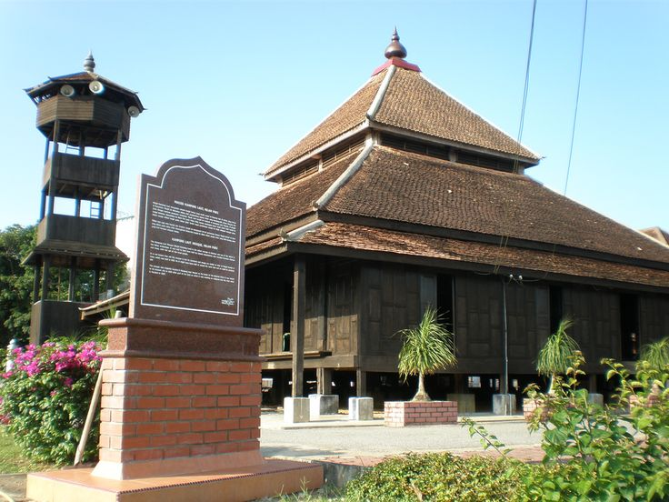
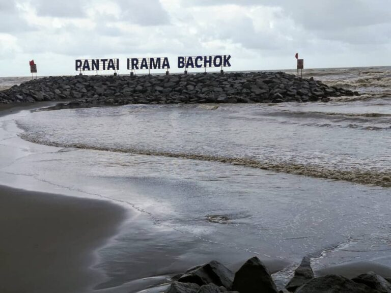

Explore Kelantan
Must Visit Places
Discover the rich cultural heritage, majestic wooden architecture, breathtaking coastlines, and unique historical landmarks that make Kelantan an unforgettable destination.
Explore Kelantan
Discover the rich cultural heritage, majestic wooden architecture, breathtaking coastlines, and unique historical landmarks that make Kelantan an unforgettable destination.
Don't leave Kelantan without exploring these top four incredible locations:

Named after the Prophet Muhammad's wife, this bustling market in Kota Bharu is a vibrant hub of local commerce where you can find everything from fresh produce and traditional snacks to colorful textiles and handmade crafts. It's the perfect place to experience the lively atmosphere of Kelantanese culture and pick up unique souvenirs.

One of the oldest mosques in Malaysia, this stunning wooden structure is a masterpiece of traditional Malay architecture. Located in Pengkalan Pasir, the mosque's intricate carvings and serene surroundings make it a must-visit for history buffs and architecture enthusiasts alike.

Known as "Rhythm Beach," Pantai Irama is a beautiful stretch of coastline in Bachok that offers golden sands, clear waters, and stunning sunsets. It's a popular spot for swimming, picnicking, and enjoying the natural beauty of Kelantan's seaside.

This Buddhist temple in Tumpat is famous for housing the largest reclining Buddha statue in Southeast Asia. The temple's peaceful ambiance and impressive architecture make it a fascinating destination for visitors interested in religious sites and cultural diversity.